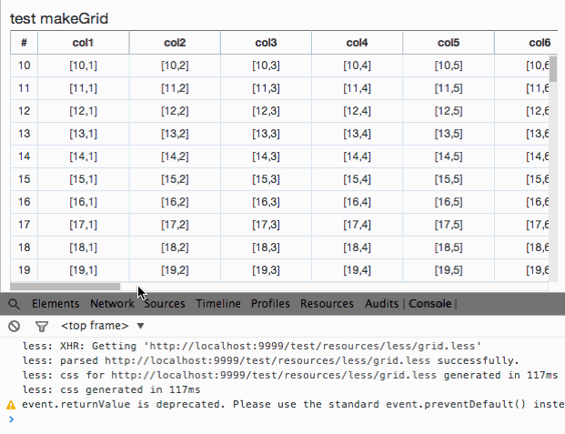
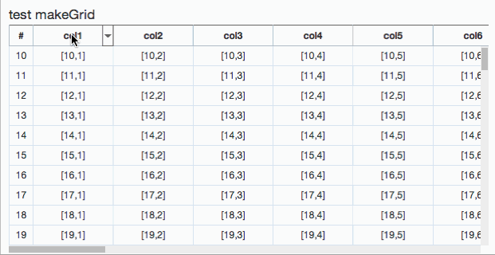

frozen Column
frozen Column 이란 항상 보이는 Column을 뜻합니다. 그렇기에 가로 스크롤을 하더라도 frozen Column으로 지정된 Column들은 항상 보이게 됩니다. frozenColumn도 다른 Column 기능들과 마찬가지로 API와 UI 조작으로 변경 가능합니다.
grid.option().set("frozenColumn", 왼쪽 부터의 column 개수 );
FrozenColumn은 W5 Grid에 option으로 분류되어 있습니다.
option으로 분류되어 있는 이러한 속성을 변경하기 위해 .set() API를 사용하기 위해서는 .option() 함수를 통해 접근해야 합니다. 예를 들어 맨 왠쪽부터 2개의 column 들을 고정시키고 싶다면
var grid = new w5.Grid({ ... }).render();
...
grid.option().set("frozenColumn", 2);
라고 javascript code를 작성하면 됩니다.

UI로 Column 숨기기
UI로 FrozenColumn을 변경할 수 있는 방법은 두가지 입니다. 첫번째는 Column Menu의 Frozen Column을 선택하는 방법이고, 두번째는 frozen Column bar을 드래그앤 드롭하는 방법입니다.
Column Menu로 지정하기
Header Label에 마우스를 오버하면 메뉴를 열 수 있는 버튼이 나타납니다. 메뉴의 두번째 메뉴인 set Frozen Column을 선택하면 해당 Column 까지가 frozen Column으로 지정이 됩니다.
Frozen Column은 처음 가로 스크롤의 영역을 벗어나면 의미가 없기 때문에, 처음에 보인 영역 이후의 Column들의 Column menu에 대해서는 비활성화가 되게 됩니다.

frozen Column Bar을 드래그하여 지정하기
UI로 조작하는 또 하나의 방법은 frozen Column 지정 시 나타나는 바를 끄는 방법이다. bar을 끌기 시작하면, frozen Column이 지정되기 적합한 곳에 표시가 나타납니다. 이 bar을 왼편으로 W5 Grid 영역 바깥으로 보내면 frozen column이 해제가 됩니다.